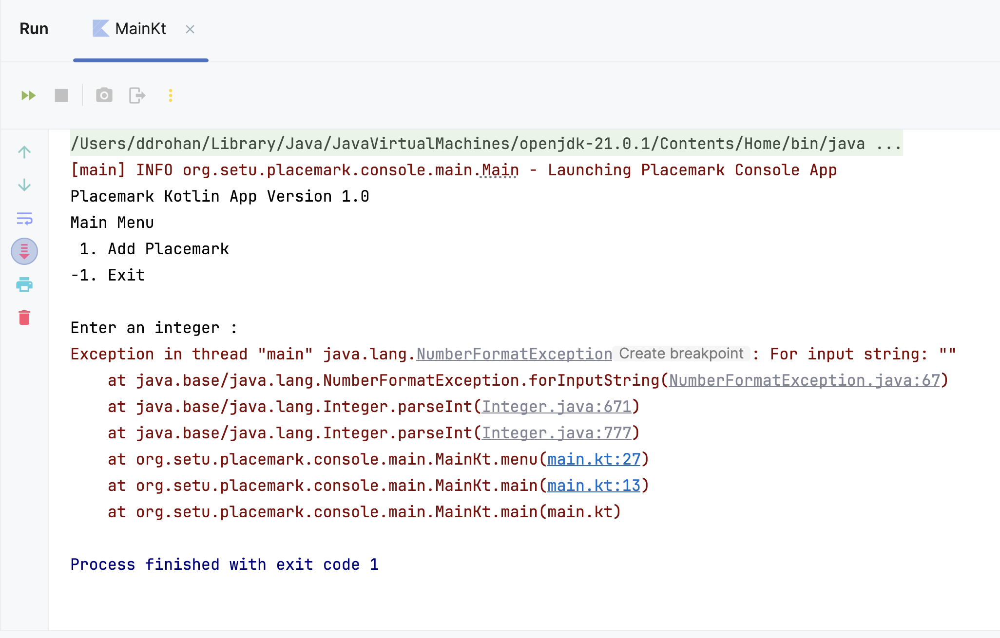
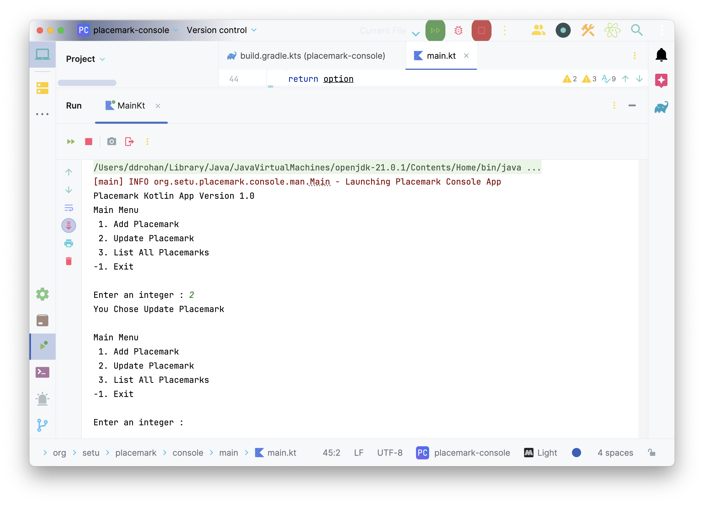

We want to give the following options to user while using our ‘app’
- Add a Placemark
- Update a Placemark
- List All Placemarks and
- Exit
To begin with, we’ll just prompt the user with the above options, accept their choice and simply tell them what they selected. It’s not much but we’ll build on this over the coming labs and add functionality and complexity along the way.
To achieve this particular step we’ll need to make use of a number of the different basic features of Kotlin (akin to Java).
The first thing to do is be able to display our options to the user in a Menu format and we should probably wrap this up in a function as we’ll need to use it again and again.
Go ahead and add the following function after your main function
fun menu() : Int {
var option : Int
var input: String? = null
println("Main Menu")
println(" 1. Add Placemark")
println("-1. Exit")
println()
print("Enter an integer : ")
input = readLine()!!
option = input.toInt()
return option
}
Notice how we return an Int - we will use this back in our main function. Note also we’ll be using a -1 to exit, we could use any values really just as long as we carry out the correct checks back in main
Now, in your main function introduce a new var called input to hold the value returned from a call to menu().
Your function main should now look something like this
fun main() {
logger.info { "Launching Placemark Console App" }
println("Placemark Kotlin App Version 1.0")
var input: Int
input = menu()
}
Run you app to confirm a menu is displayed to the user and then complete the necessary options back in your menu function.
Test it for empty values and non integer values and see what happens?
You’ll probably get a number of different types of Exceptions thrown (like below) because we’ve no validation on the input from the user.

Revisit your menu function and replace it with the following
fun menu() : Int {
var option : Int
var input: String? = null
println("Main Menu")
println(" 1. Add Placemark")
println(" 2. Update Placemark")
println(" 3. List All Placemarks")
println("-1. Exit")
println()
print("Enter an integer : ")
input = readLine()!!
option = if (input.toIntOrNull() != null && !input.isEmpty())
input.toInt()
else
-9
return option
}
Make a note of how we validate our input before we convert it to an integer. Run your app again to confirm the menu now functions as expected, including handling invalid input.
The menu and our app isn’t of much use if we need to run it every time the user wants to choose an option so we’ll now place or menu inside a loop which will continue to display until the user decides to exit placemark.
Go ahead and replace your main function with the following
fun main() {
logger.info { "Launching Placemark Console App" }
println("Placemark Kotlin App Version 1.0")
var input: Int
do {
input = menu()
when(input) {
1 -> println("You Chose Add Placemark")
-1 -> println("Exiting App")
else -> println("Invalid Option")
}
println()
} while (input != -1)
logger.info { "Shutting Down Placemark Console App" }
}
Note we’re using a do-while instead of a while so we’re guaranteed to have our menu displayed at least the once.
Run your app again to confirm we now have a menu system in operation and then complete the step by refactoring your main function to manage all options (Updating & Listing Placemarks).
Once finished, you should be seeing something like this
